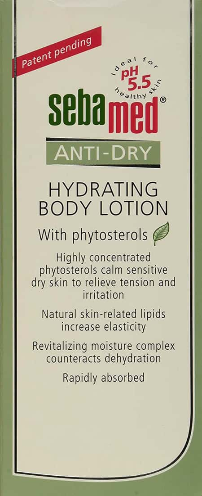
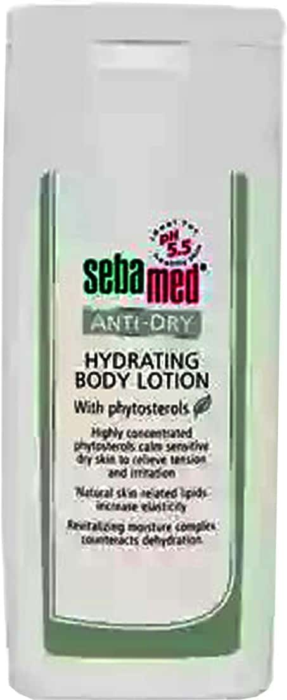

Sebamed Anti Dry Body Lotion is a highly concentrated formula that is easily absorbed and leaves the skin feeling soft and smooth. It is ideal for those with dry, sensitive skin and is clinically proven to relieve itching and irritation.
This body lotion contains natural ingredients such as shea butter, cocoa butter, and glycerin, which help to hydrate and nourish the skin. It also contains vitamin E, which helps to protect the skin from environmental damage.
Sebamed Anti Dry Body Lotion is free of fragrances, dyes, and parabens, making it ideal for those with sensitive skin.
Sebamed Anti Dry Body Lotion is available in a 250ml bottle.

